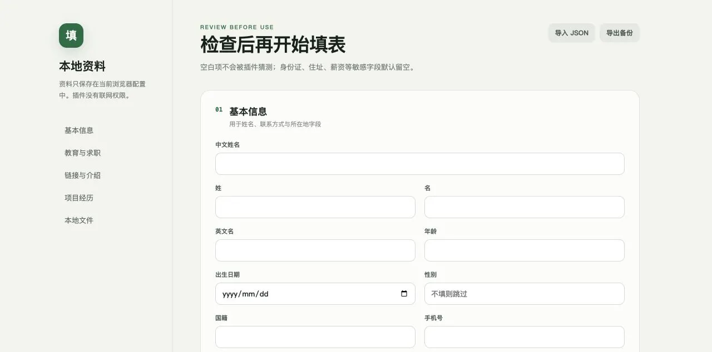

CHROME EXTENSION · LOCAL-FIRST
资料一键填充
一个面向招聘表单的本地 Chrome / Edge 扩展。它在用户主动点击后识别当前页面字段，用保存在浏览器内的资料填写常见信息，并把核对与最终提交留给用户。
当前状态：本地测试中。常见个人信息、教育经历、链接、附件和项目经历已支持；复杂级联选择器、多步表单与部分网站自绘组件仍需手动处理。
无联网权限资料保存在当前浏览器配置
按需触发只在点击插件后读取当前页
保守填写默认不覆盖已有内容
不自动提交核对与申请始终由用户完成
本地资料库
设置页将常用资料按基本信息、教育与求职、链接与介绍、项目经历和本地文件组织。空白项不会被猜测，敏感字段默认跳过，资料可导入导出备份。

交互流程
维护资料
用户在设置页确认基础资料、项目经历和本地简历附件。
识别字段
点击扩展后读取当前标签页，用中英文标签做保守匹配。
填写与学习
填入已识别字段；新增内容只有在用户勾选确认后才会保存。
人工核对
复杂控件和敏感内容保持空白，最终提交由用户在招聘网站完成。
仍在解决的问题
招聘网站对字段命名和组件实现没有统一规范。当前策略宁可少填，也不在不确定时写入错误资料；验证码、文件框限制、复杂下拉和弹窗选择器仍需要人工操作。后续测试重点是扩展字段匹配覆盖，同时维持明确的隐私边界。